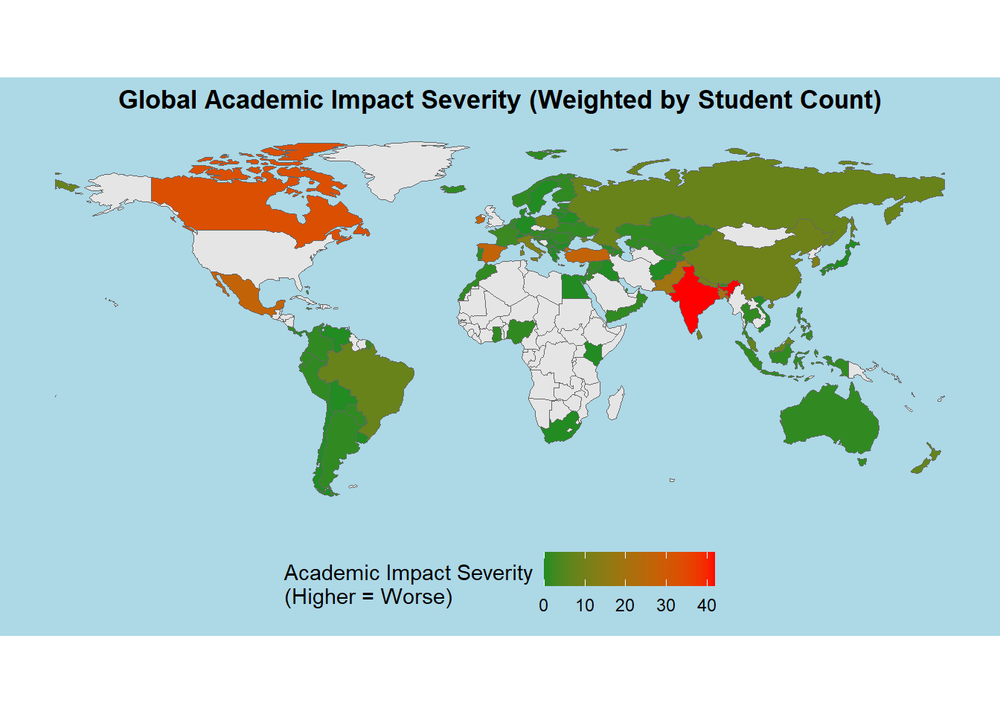
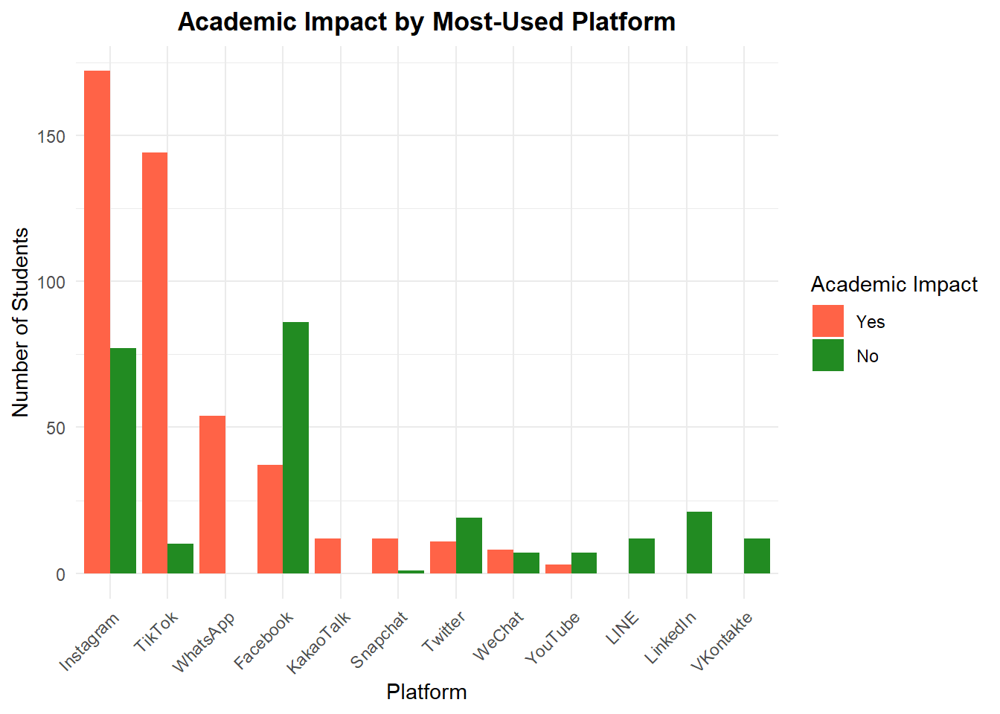
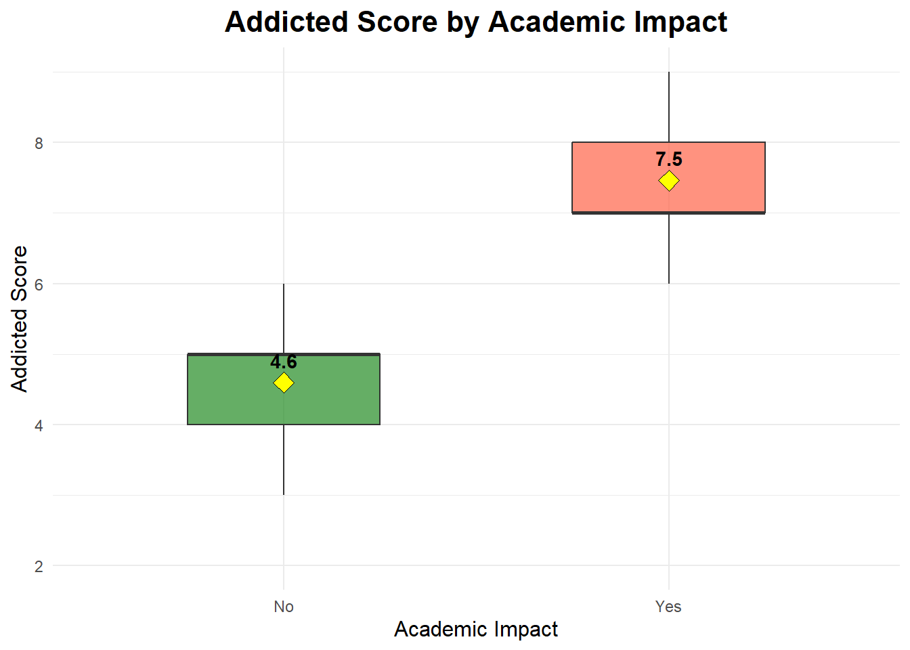
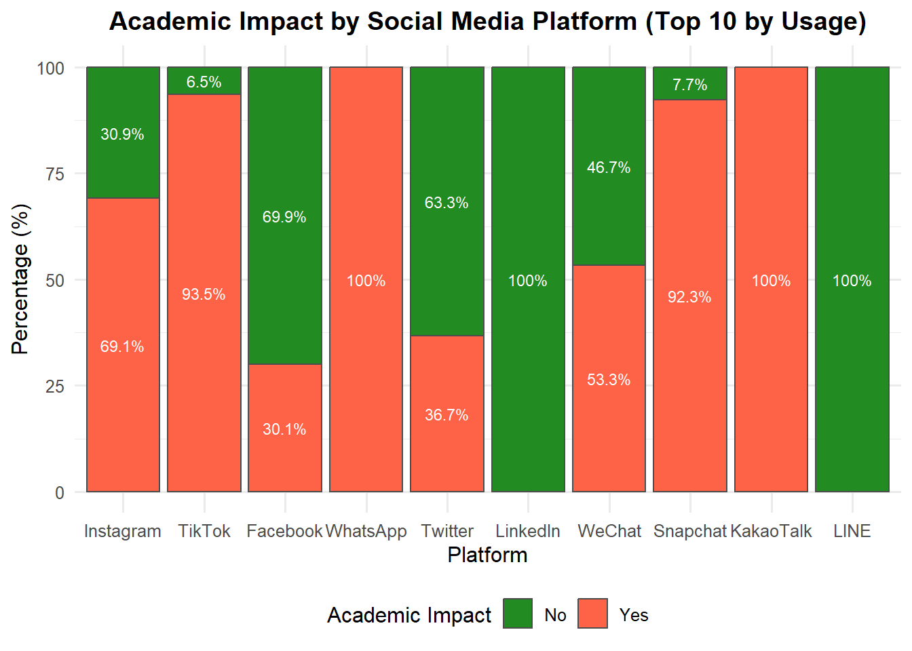

Final Individual Report
Analysis: Social Media Use and Academic Performance
Introduction & Specific Question
Social media has become a dominant part of daily life for young adults, and its rapid growth has raised important questions about how constant digital engagement shapes academic outcomes. This analysis examines whether extensive social media use is associated with lower academic performance among students. Using a publicly available dataset from Kaggle, the study explores patterns of usage and compares academic outcomes across different levels of engagement.
The goal is to understand whether heavy social media use is simply a widespread habit or whether it has meaningful implications for how well students perform in their studies. By looking at trends in the data, the analysis considers whether greater time spent on social platforms is linked to lower grades, reduced focus, or other academic challenges. The broader purpose is to shed light on how digital behavior fits into the daily lives of young adults and how it may influence their well-being and academic success. This perspective contributes to our group’s overarching investigation of the emotional, cognitive, and behavioral effects of social media use in the youth population.
Specific Question
How does excessive daily social media use influence students’ academic performance?
This question examines whether excessive daily social media use affects students’ academic performance. By analyzing usage patterns and perceived academic impact, we can infer if heavy social media engagement is linked to lower grades, reduced focus, or academic challenges. The findings help clarify whether social media is just a habit or a factor with meaningful consequences for learning and student well-being.
Data Acquisition
To begin the analysis, the first step is to obtain a reliable and structured dataset that captures both social media usage patterns and indicators of academic performance. The dataset used in this project comes from Kaggle, a platform that provides open access to user-contributed data for research and learning. This particular dataset includes information on students’ time spent on social media alongside variables related to their academic standing and well-being.
Using a single, consistent dataset allows the analysis to focus on patterns within a defined student population. It also ensures that all findings are grounded in the same source of information, which supports clear interpretation later in the project. Once the dataset is acquired, it is prepared for analysis through careful cleaning, checking for missing values, and organizing the variables so they can be examined meaningfully in the next stages.
Dataset Overview
This project draws on the Social Media Addiction vs Relationships dataset available through Kaggle. The dataset is based on an online survey completed by young people between the ages of sixteen and twenty five from various countries. Each entry reflects the experiences of a single respondent and brings together several types of information that support an examination of both digital habits and academic outcomes. The Social Media Addiction vs Relationships dataset contains 705 student records with variables in three main categories:
Demographics
Age
Gender
Academic level (high school, undergraduate, graduate)
Social Media Behavior
Average daily usage hours
Most-used platform (Instagram, Facebook, etc.)
Addiction score or self-reported dependency
Life Outcomes / Well-being
Academic performance indicators (self-reported impact of social media)
Mental health score
Sleep patterns
Relationship status and conflicts
This structure allows us to explore relationships between social media usage and academic performance, while also considering other aspects of student well-being.
Why This Dataset is Suitable:
Combines behavioral, demographic, and outcome variables
Supports analysis of correlations between social media use and academic performance
Enables comparisons across student subgroups (e.g., by age, gender, academic level)
Provides a consistent source of data for clear interpretation of findings
Limitations to Consider:
Self-reported data: potential recall bias or social desirability bias
Cross-sectional design: only supports correlation, not causation
Moderate sample size: subgroup analyses may have lower statistical power
Data Preparation
Before beginning the analysis, it is important to ensure that the dataset is clean, consistent, and ready for exploration. This involves handling missing values, correcting variable types, and organizing the data in a way that makes analysis straightforward and reliable. For example, variables like Gender, Academic Level, or Most Used Platform are categories rather than numbers, so they are treated as factors to make analysis and visualization easier.
Data Analysis
With the dataset cleaned and prepared, the next step is to explore the relationship between social media usage and academic performance. The analysis focuses on key variables such as average daily usage hours, addiction score, gender, and preferred social media platform to understand both the overall trends and differences across student subgroups. By applying a combination of correlation, regression, and group comparison techniques, we can assess not only whether social media use impacts academic performance, but also the extent of that impact and which factors contribute most strongly to it.
Descriptive Analysis
1. Correlation between Daily Usage and Academic Impact
To begin, we examine whether there is a direct relationship between the number of hours students spend on social media daily and the impact on their academic performance. Using a correlation analysis, we can quantify both the direction and strength of this relationship, providing an initial insight into how increased usage may be associated with academic challenges.
View R Code
library(dplyr)
library(knitr)
library(kableExtra)
working_data <- working_data |>
mutate(
Affects_Academic_Performance_Num = ifelse(Affects_Academic_Performance == "Yes", 1, 0)
)
# Run correlation
cor_test <- cor.test(
working_data$Avg_Daily_Usage_Hours,
working_data$Affects_Academic_Performance_Num
)
# Create summary table dynamically
cor_summary <- data.frame(
Variable_1 = "Avg_Daily_Usage_Hours",
Variable_2 = "Affects_Academic_Performance_Num",
Correlation = round(cor_test$estimate, 3),
`p-value` = signif(cor_test$p.value, 3),
`95% CI Lower` = round(cor_test$conf.int[1], 3),
`95% CI Upper` = round(cor_test$conf.int[2], 3)
)
# Display styled table with centered caption
cor_summary |>
kable(
caption = "Correlation Between Social Media Usage and Academic Impact",
digits = 3,
col.names = c("Variable 1", "Variable 2", "Correlation", "p-value", "95% CI Lower", "95% CI Upper")
) |>
kable_styling(
bootstrap_options = c("striped", "hover", "condensed"),
full_width = FALSE,
position = "center"
) |>
row_spec(0, bold = TRUE, color = "white", background = "#1F4E79")| Variable 1 | Variable 2 | Correlation | p-value | 95% CI Lower | 95% CI Upper | |
|---|---|---|---|---|---|---|
| cor | Avg_Daily_Usage_Hours | Affects_Academic_Performance_Num | 0.661 | 0 | 0.618 | 0.701 |
There is a strong positive correlation (r = 0.661, p < 0.001) between average daily social media usage and the likelihood of reporting a negative impact on academic performance. This indicates that students who spend more hours on social media are substantially more likely to report that it affects their academics, and the 95% confidence interval (0.618 – 0.701) confirms that this relationship is both robust and statistically significant.
2. Chi-Square Test for Gender vs Academic Impact
To understand whether the experience of academic impact differs between male and female students, we first examine how each gender responds to the question of whether social media affects their academic performance. A chi-square test allows us to compare the distribution of Yes and No responses across gender groups. This provides a clear indication of whether academic impact is experienced equally across genders or whether one group appears more affected than the other.
View R Code
library(dplyr)
library(knitr)
library(kableExtra)
# Create contingency table
gender_table <- table(working_data$Gender, working_data$Affects_Academic_Performance)
# Run chi-square test
chi_gender <- chisq.test(gender_table)
# Build dynamic results table
chi_gender_summary <- data.frame(
Statistic = round(chi_gender$statistic, 3),
`Degrees of Freedom` = chi_gender$parameter,
`p-value` = signif(chi_gender$p.value, 3)
)
# Display styled table
chi_gender_summary |>
kable(
caption = "Chi-Square Test: Gender vs Academic Impact",
digits = 3,
col.names = c("Chi-Square Statistic", "Degrees of Freedom", "p-value")
) |>
kable_styling(
bootstrap_options = c("striped", "hover", "condensed"),
full_width = FALSE,
position = "center"
) |>
row_spec(0, bold = TRUE, color = "white", background = "#1F4E79")| Chi-Square Statistic | Degrees of Freedom | p-value | |
|---|---|---|---|
| X-squared | 0.334 | 1 | 0.563 |
The chi square test examining the association between gender and perceived impact of social media on academic performance shows no statistically significant relationship (χ² = 0.334, df = 1, p = 0.563). This indicates that male and female respondents do not differ meaningfully in how they report academic performance being affected by social media use. In other words, gender is not a predictor of whether students feel their academics are impacted.
3. Comparison Across Social Media Platforms
To understand whether certain social media platforms are more strongly associated with academic impact, it is important to compare students’ self-reported academic performance across the platforms they use most frequently. Different platforms attract different content styles, user behaviors, and engagement patterns, which may translate into varying levels of distraction or influence on study habits. By examining how academic impact responses differ across platforms, we can identify which platforms contribute most to the overall association and which ones appear more academically disruptive compared to others. This comparison helps reveal whether the effect of social media is uniform across platforms or driven by a few specific ones.
View R Code
library(dplyr)
library(tidyr)
library(kableExtra)
# Ensure variables are factors
working_data <- working_data |>
mutate(
Most_Used_Platform = as.factor(Most_Used_Platform),
Affects_Academic_Performance = as.factor(Affects_Academic_Performance)
)
# Create platform comparison table
platform_table <- working_data |>
count(Most_Used_Platform, Affects_Academic_Performance) |>
pivot_wider(
names_from = Affects_Academic_Performance,
values_from = n,
values_fill = 0
)
# Convert to matrix for chi-square test
platform_matrix <- working_data |>
select(Most_Used_Platform, Affects_Academic_Performance) |>
table()
# Run chi-square test
chi_platform <- chisq.test(platform_matrix)
# Summary results
platform_results <- tibble(
Statistic = round(chi_platform$statistic, 3),
df = chi_platform$parameter,
p_value = sprintf("%.3f", chi_platform$p.value) # p-value with 3 decimals
)
# Display styled table
platform_results |>
kable(
caption = "Chi Square Test: Platform vs Academic Performance",
col.names = c("Chi Square Statistic", "Degrees of Freedom", "p value")
) |>
kable_styling(
bootstrap_options = c("striped", "hover", "condensed"),
full_width = FALSE,
position = "center"
) |>
row_spec(0, bold = TRUE, color = "white", background = "#1F4E79")| Chi Square Statistic | Degrees of Freedom | p value |
|---|---|---|
| 260.325 | 11 | 0.000 |
The chi-square test examining the relationship between students’ most-used social media platform and whether social media affects their academic performance shows a very strong and statistically significant association (χ² = 260.325, df = 11, p < 0.001).
This indicates that academic impact is not distributed evenly across platforms. Some platforms are used disproportionately by students who report that their academics are affected, while others are more common among students who report no impact. In other words, certain platforms are likely contributing more to academic difficulties than others. The next step is to examine standardized residuals to identify which platforms are driving this effect the most.
View R Code
library(dplyr)
library(kableExtra)
# Create contingency table
platform_table <- table(
working_data$Most_Used_Platform,
working_data$Affects_Academic_Performance
)
# Chi-square test
chi_platform <- chisq.test(platform_table)
# Extract standardized residuals
residuals_df <- as.data.frame(chi_platform$stdres)
# Clean column names
colnames(residuals_df) <- c("Platform", "Academic_Impact", "Std_Residual")
# Add magnitude column for ranking
residuals_ranked <- residuals_df |>
mutate(Abs_Residual = abs(Std_Residual)) |>
arrange(desc(Abs_Residual))
# Display top platforms driving effect
residuals_ranked |>
kable(
caption = "Platforms Driving the Strongest Academic Impact (Ranked by Standardized Residuals)",
digits = 3
) |>
kable_styling(
bootstrap_options = c("striped", "hover", "condensed"),
full_width = FALSE,
position = "center"
) |>
row_spec(0, bold = TRUE, color = "white", background = "#1F4E79")| Platform | Academic_Impact | Std_Residual | Abs_Residual |
|---|---|---|---|
| No | 8.704 | 8.704 | |
| Yes | -8.704 | 8.704 | |
| TikTok | No | -8.568 | 8.568 |
| TikTok | Yes | 8.568 | 8.568 |
| No | 6.238 | 6.238 | |
| Yes | -6.238 | 6.238 | |
| No | -5.704 | 5.704 | |
| Yes | 5.704 | 5.704 | |
| LINE | No | 4.685 | 4.685 |
| VKontakte | No | 4.685 | 4.685 |
| LINE | Yes | -4.685 | 4.685 |
| VKontakte | Yes | -4.685 | 4.685 |
| No | 3.222 | 3.222 | |
| Yes | -3.222 | 3.222 | |
| KakaoTalk | No | -2.606 | 2.606 |
| KakaoTalk | Yes | 2.606 | 2.606 |
| YouTube | No | 2.277 | 2.277 |
| YouTube | Yes | -2.277 | 2.277 |
| Snapchat | No | -2.130 | 2.130 |
| Snapchat | Yes | 2.130 | 2.130 |
| No | -1.974 | 1.974 | |
| Yes | 1.974 | 1.974 | |
| No | 0.892 | 0.892 | |
| Yes | -0.892 | 0.892 |
TikTok shows the strongest positive association with academic impact, meaning students who report academic issues use it far more than expected.
Facebook and LinkedIn show high residuals in the opposite direction, indicating they are used more by students who report no academic impact.
Other platforms like WhatsApp, LINE, and VKontakte also show notable effects, but less pronounced than TikTok.
Overall, TikTok emerges as the platform most associated with reported academic difficulties.
4. Analysis by Usage Categories
Finally, students are grouped by low, medium, and high daily usage to assess how social media intensity relates to academic performance. This highlights trends and potential threshold effects across usage levels.
View R Code
library(dplyr)
library(kableExtra)
# Recode usage categories and set factor order
working_data <- working_data |>
mutate(
Usage_Category = case_when(
Avg_Daily_Usage_Hours > 4 ~ "High (>4 hrs)",
Avg_Daily_Usage_Hours >= 2 & Avg_Daily_Usage_Hours <= 4 ~ "Moderate (2-4 hrs)",
Avg_Daily_Usage_Hours < 2 ~ "Low (<2 hrs)"
),
Usage_Category = factor(Usage_Category, levels = c("High (>4 hrs)", "Moderate (2-4 hrs)", "Low (<2 hrs)"))
)
# Count students by usage category and academic impact
usage_table <- working_data |>
count(Usage_Category, Affects_Academic_Performance) |>
pivot_wider(
names_from = Affects_Academic_Performance,
values_from = n,
values_fill = 0
) |>
mutate(
Total = Yes + No,
Percent_Yes = round(Yes / Total * 100, 1),
Percent_No = round(No / Total * 100, 1)
)
# Display table in desired order
usage_table |>
kable(
caption = "Academic Impact by Daily Social Media Usage Category (High | Moderate | Low)",
digits = 1,
col.names = c("Usage Category", "No", "Yes", "Total", "% No", "% Yes")
) |>
kable_styling(
bootstrap_options = c("striped", "hover", "condensed"),
full_width = FALSE,
position = "center"
) |>
row_spec(0, bold = TRUE, color = "white", background = "#1F4E79")| Usage Category | No | Yes | Total | % No | % Yes |
|---|---|---|---|---|---|
| High (>4 hrs) | 109 | 427 | 536 | 79.7 | 20.3 |
| Moderate (2-4 hrs) | 142 | 26 | 168 | 15.5 | 84.5 |
| Low (<2 hrs) | 1 | 0 | 1 | 0.0 | 100.0 |
High Usage (>4 hrs/day): Most students (427 out of 536, 79.7%) report that social media does affect their academics, indicating that heavy users are more likely to experience academic difficulties.
Moderate Usage (2–4 hrs/day): The majority (142 out of 168, 84.5%) report no academic impact, suggesting moderate use may not strongly disrupt academics.
Low Usage (<2 hrs/day): Only one student in this category, who reports an academic impact, so data is too small to draw conclusions.
There is a clear trend; students who spend more time on social media daily are more likely to report negative academic effects. This supports the idea that usage intensity is positively associated with academic disruption.
Supporting Visuals
1. Visualization #1: Global Distribution of Social Media–Related Academic Impact To explore global patterns, academic impact is mapped by country, weighting both average reported severity and respondent count. This highlights where social media most affects performance and where the effects are most widespread.
View R Code
library(sf)
library(dplyr)
library(ggplot2)
library(rnaturalearth)
library(rnaturalearthdata)
# Step 1: Compute weighted impact
map_data <- working_data |>
group_by(Country) |>
summarise(
Count = n(),
Mean_Impact = mean(Affects_Academic_Performance_Num, na.rm = TRUE),
Weighted_Impact = Mean_Impact * Count
) |>
ungroup()
# Step 2: Load world map (fixed scale) and remove Antarctica
world <- ne_countries(scale = "small", returnclass = "sf") |>
filter(name != "Antarctica")
world_data <- world |>
left_join(map_data, by = c("name" = "Country"))
ggplot(world_data) +
geom_sf(aes(fill = Weighted_Impact), color = "gray40", size = 0.1) +
scale_fill_gradient(
low = "forestgreen",
high = "red",
na.value = "grey90",
name = "Academic Impact Severity\n(Higher = Worse)"
) +
labs(
title = "Global Academic Impact Severity (Weighted by Student Count)"
) +
theme_minimal(base_size = 11) +
theme(
plot.background = element_rect(fill = "lightblue", color = NA),
panel.background = element_rect(fill = "lightblue", color = NA),
panel.grid = element_blank(),
axis.text = element_blank(),
axis.ticks = element_blank(),
plot.title = element_text(face = "bold", hjust = 0.5),
legend.position = "bottom"
)
The map shows global academic impact of social media, weighted by student count. Red and orange countries, like India and parts of North America, report stronger negative effects, while green countries show lower impact. White areas lack sufficient data, highlighting geographic variation in social media’s effect on academics.
2. Visualization #2: Academic Impact Across Platforms
Not all platforms affect academics equally. Comparing students’ reported difficulties across their most-used platforms reveals which ones are linked to the greatest challenges, highlighting where social media may reduce focus or study time.
View R Code
library(ggplot2)
library(dplyr)
library(tidyr)
# Prepare data: count by platform and academic impact
platform_counts <- working_data |>
count(Most_Used_Platform, Affects_Academic_Performance) |>
pivot_wider(
names_from = Affects_Academic_Performance,
values_from = n,
values_fill = 0
) |>
mutate(Total_Yes = Yes) |>
arrange(desc(Total_Yes)) |>
mutate(Most_Used_Platform = factor(Most_Used_Platform, levels = Most_Used_Platform))
# Convert to long format and set factor order for Academic_Impact
plot_data <- platform_counts |>
pivot_longer(cols = c(No, Yes), names_to = "Academic_Impact", values_to = "Count") |>
mutate(Academic_Impact = factor(Academic_Impact, levels = c("Yes", "No"))) # Yes on left
# Plot
plot_data |>
ggplot(aes(x = Most_Used_Platform, y = Count, fill = Academic_Impact)) +
geom_col(position = "dodge") +
scale_fill_manual(values = c("Yes" = "tomato", "No" = "forestgreen")) +
labs(
title = "Academic Impact by Most-Used Platform",
x = "Platform",
y = "Number of Students",
fill = "Academic Impact"
) +
theme_minimal() +
theme(
axis.text.x = element_text(angle = 45, hjust = 1),
plot.title = element_text(hjust = 0.5, face = "bold") # center-align title
)
Instagram and TikTok have the largest number of students reporting academic impact (“Yes” in red), suggesting these platforms are the most strongly associated with reported academic difficulties
Facebook and WhatsApp show more balanced patterns: a noticeable number of students report impact, but a substantial portion report no impact (“No” in green)
Platforms like LinkedIn, VKontakte, LINE, YouTube, Snapchat, and WeChat show relatively low counts for academic impact, indicating fewer students feel these platforms affect their academics
Overall Insight: The chart confirms that Instagram and TikTok stand out as the platforms most associated with academic difficulties, while other platforms have a smaller or mixed impact.
3. Visualization #3: Addicted Score by Academic Impact
This boxplot compares Addicted Scores between students reporting academic impact (“Yes”) and those who do not (“No”). Yellow diamonds show group means, highlighting that higher addiction scores are associated with perceived academic challenges.
View R Code
library(ggplot2)
library(dplyr)
# Calculate means
mean_data <- working_data |>
group_by(Affects_Academic_Performance) |>
summarise(mean_score = mean(Addicted_Score, na.rm = TRUE))
# Plot
working_data |>
ggplot(aes(x = Affects_Academic_Performance,
y = Addicted_Score,
fill = Affects_Academic_Performance)) +
# Boxplot
geom_boxplot(alpha = 0.7, width = 0.5, outlier.shape = NA) +
# Mean points
stat_summary(fun = mean, geom = "point", shape = 23, size = 4, fill = "yellow") +
# Labels for mean
geom_text(data = mean_data,
aes(x = Affects_Academic_Performance,
y = mean_score,
label = round(mean_score, 1)),
vjust = -1, color = "black", fontface = "bold") +
# Labels
labs(
title = "Addicted Score by Academic Impact",
x = "Academic Impact",
y = "Addicted Score"
) +
# Colors
scale_fill_manual(values = c("Yes" = "tomato", "No" = "forestgreen")) +
# Theme
theme_minimal() +
theme(
plot.title = element_text(hjust = 0.5, size = 16, face = "bold"),
axis.title = element_text(size = 12),
legend.position = "none"
)
The boxplot shows that students who report social media affecting their academics (Yes) have higher addiction scores (mean = 7.5) than those who do not (No, mean = 4.6). The wider spread for the “Yes” group indicates more variability, while the “No” group is more consistent. Overall, higher social media addiction appears linked to perceived academic challenges.
4. Visualization #4: Reported Academic Impact Across Major Social Media Platforms
This visualization compares the share of users who report academic impact across the ten most commonly used social media platforms, showing how perceptions of academic disruption differ by platform rather than overall usage alone.
View R Code
library(dplyr)
library(ggplot2)
# Step 1: Compute % split per platform
platform_impact <- working_data |>
filter(!is.na(Most_Used_Platform), !is.na(Affects_Academic_Performance)) |>
group_by(Most_Used_Platform, Affects_Academic_Performance) |>
summarise(Count = n(), .groups = "drop") |>
group_by(Most_Used_Platform) |>
mutate(
Total = sum(Count),
Percent = Count / Total * 100
) |>
ungroup()
# Step 2: Get top 10 platforms by total users
top_platforms <- platform_impact |>
group_by(Most_Used_Platform) |>
summarise(Total_Users = sum(Count), .groups = "drop") |>
arrange(desc(Total_Users)) |>
slice_head(n = 10) |>
pull(Most_Used_Platform)
# Step 3: Filter top platforms and set factor levels for vertical ordering
platform_impact_top <- platform_impact |>
filter(Most_Used_Platform %in% top_platforms) |>
mutate(
Most_Used_Platform = factor(Most_Used_Platform, levels = top_platforms) # left = highest usage
)
# Step 4: Plot vertical stacked bar chart with percentages inside bars
ggplot(platform_impact_top, aes(x = Most_Used_Platform, y = Percent, fill = Affects_Academic_Performance)) +
geom_col(color = "gray30") +
geom_text(
aes(label = paste0(round(Percent, 1), "%")),
position = position_stack(vjust = 0.5),
size = 3,
color = "white"
) +
scale_fill_manual(values = c("Yes" = "tomato", "No" = "forestgreen")) +
labs(
title = "Academic Impact by Social Media Platform (Top 10 by Usage)",
x = "Platform",
y = "Percentage (%)",
fill = "Academic Impact"
) +
theme_minimal(base_size = 12) +
theme(
plot.title = element_text(face = "bold", hjust = 0.5),
legend.position = "bottom"
)
Interpretation
There is a strong positive correlation between daily social media usage and reported academic impact (r = 0.661, p < 0.001), with high users (>4 hrs/day) most affected.
Gender does not significantly influence academic impact (χ² = 0.334, p = 0.563).
Certain platforms, particularly TikTok and Instagram, are more strongly associated with academic difficulties.
Students reporting academic impact also have higher addiction scores, indicating compulsive use may contribute to academic challenges.
Conclusion
Excessive social media use is associated with negative academic outcomes, with usage intensity and addictive behavior emerging as significant predictors of academic disruption. Gender does not appear to influence this relationship, highlighting that the impact of social media is consistent across male and female students. The analysis further indicates that platform-specific effects vary, suggesting that certain social networks pose a greater risk to academic performance than others. These findings underscore the importance of monitoring and moderating social media use, particularly on highly disruptive platforms, to safeguard academic focus and performance.